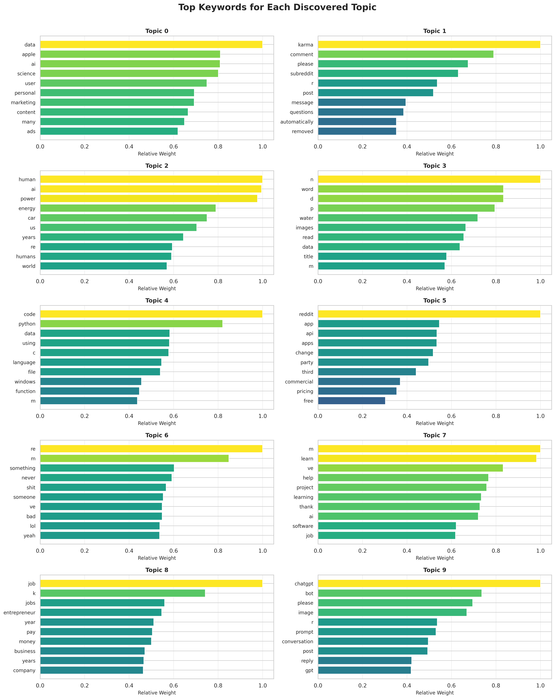
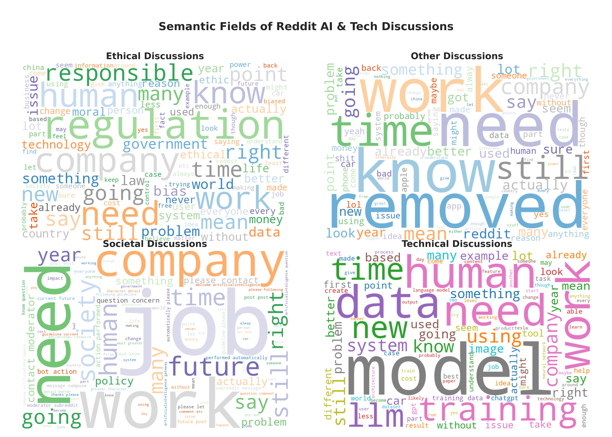

Natural Language Processing
Sentiment Analysis and Topic Modeling
Overview
This study employs Natural Language Processing (NLP) techniques to investigate discussions related to Technology, Science, and Artificial Intelligence on Reddit. We analyze community discourse across multiple subreddits to identify dominant topics, track sentiment trends over time, and explore thematic differences in ethical, technical, and societal discussions. Methods include Latent Dirichlet Allocation (LDA) for topic modeling, VADER for sentiment analysis, and rule-based text classification to generate word clouds, providing both quantitative and visual insights into the semantic structure and community focus within AI- and technology-related discussions.
Business Question 5
What are the dominant topics and trends within fast-growing technology-related subreddits?
As shown in the figure, the Latent Dirichlet Allocation (LDA) model identifies ten distinct topics from the corpus, each represented by its most influential keywords. These keywords provide an interpretable summary of the semantic focus of each discovered topic.
Topic 0 is characterized by keywords such as data, apple, ai, science, user, and marketing, suggesting that this topic centers on discussions related to data science, artificial intelligence, and technology-driven business practices.
Topic 1 includes terms such as karma, comment, subreddit, message, and questions, indicating that it reflects conversations about community interactions, platform moderation, and posting behaviors within online forums such as Reddit.
Topic 2 is defined by words like human, ai, power, energy, car, and years, representing discourse around human–AI relations, emerging technologies, and long-term trends in energy and transportation.
Topic 3 contains keywords including word, images, water, read, and data, pointing to content associated with information extraction, text and image processing, and data-driven analysis.
Topic 4 focuses on terms such as code, python, data, using, language, and windows, clearly corresponding to programming-related discussions involving software tools, coding practices, and computational workflows.
Topic 5 includes reddit, app, api, change, party, commercial, and pricing, which collectively suggest themes related to application development, API usage, and commercial product or platform changes.
Topic 6 is composed of more conversational keywords such as something, never, someone, bad, lol, and yeah, indicating informal, colloquial exchanges or personal expressions within the corpus.
Topic 7 features terms like learn, help, project, learning, software, and job, pointing to discussions focused on learning resources, technical support, project development, and career-oriented themes.
Topic 8 is defined by job, jobs, entrepreneur, pay, business, and company, representing topics related to employment, entrepreneurship, compensation, and broader business activities.
Topic 9 includes keywords such as chatgpt, bot, prompt, conversation, post, and reply, indicating discourse involving conversational agents, prompt design, and user–system interactions.
Overall, these topics illustrate the LDA model’s ability to uncover coherent thematic structures within the dataset and to organize large volumes of text into interpretable clusters.

Overall Topic Distribution
As shown in the pie chart, the Latent Dirichlet Allocation (LDA) model identifies ten distinct topics. Before ranking them, it is crucial to address Topic 6.
A Note on Topic 6 (General Conversational Topic): Topic 6 (22.4%), with keywords like something, never, someone, bad, lol, yeah, represents a “background” or “general conversational” topic. It captures common, low-specificity words and conversational filler that are prevalent across the entire dataset but do not form a coherent semantic theme. The emergence of such a topic is a common and expected artifact of LDA. For the purpose of identifying the most significant thematic discussions, we will exclude Topic 6 from the subsequent ranking.
After setting aside the general conversational topic, the most dominant thematic topics are as follows:

1. Dominant Thematic Topics
Topic 2 (13.6%)
Keywords: human, ai, power, energy, car, years
This is the most prominent thematic topic, focusing on human–AI relations, emerging technologies, and long-term trends in energy and transportation. It highlights discussions centered on technological development and future-oriented themes.Topic 7 (13.0%)
Keywords: learn, help, project, learning, software, job
This topic captures discourse around learning resources, technical support, project development, and career-related topics. It indicates active participation in educational and professional growth discussions within AI-focused communities.Topic 0 (11.8%)
Keywords: data, apple, ai, science, user, marketing
This topic encompasses discussions at the intersection of technology and business, including data science, AI applications, and technology-driven business practices.
2. Secondary Thematic Topics
Topic 8 (11.3%)
Keywords: job, jobs, entrepreneur, pay, business, company
This topic pertains to employment and entrepreneurship, reflecting user interest in career opportunities, compensation, and business activities.Topic 4 (11.0%)
Keywords: code, python, data, using, language, windows
This topic represents programming and technical practice, emphasizing coding, software tools, and computational workflows.
3. Peripheral Topics
Topic 3 (7.7%)
Keywords: word, images, water, read, data
This topic relates to information extraction, text and image processing, and data analysis.Topics 1, 5, 9 (<5% each)
These topics include discussions about application development and APIs, community interactions, and conversational agents such as ChatGPT.
4. Overall Interpretation
- After filtering out the large general conversational topic (Topic 6), the discourse is led by discussions on future-oriented technology and human-AI relations (Topic 2).
- Career and learning-focused topics (Topics 7 and 8) remain highly significant, accounting for roughly 24% of the corpus and highlighting a strong user focus on professional development.
- Technology and business-related discussions (Topics 0, 4) are also central, collectively representing over 22% of the content.
- This revised distribution reveals that beneath a layer of casual conversation, the community’s core focus is on the future implications of technology, career growth, and practical applications in business and programming.
Business Question 6
What are the baseline emotional patterns of discussions about AI and emerging technologies?
Method: We applied the VADER sentiment analysis tool to each comment and submission to calculate a compound score, which ranges from -1 (most negative) to +1 (most positive). Scores are then categorized as positive (>=0.05), neutral, or negative (<=-0.05).
Analysis of Sentiment Distribution: The stacked bar chart below shows the proportion of comments falling into each sentiment category for the most active subreddits.

- Finding 1: Neutrality is Dominant. Across almost all communities, the vast majority of comments are classified as neutral. This indicates that discussions on technical and scientific topics are often objective, informative, and factual rather than emotionally charged.
- Finding 2: Positive Skew. In most subreddits, the proportion of positive comments is noticeably higher than negative ones. This suggests a generally constructive or optimistic underlying tone, even within objective discussions.
Analysis of Average Compound Score: The bar chart below visualizes the average compound sentiment score for each subreddit.

- Finding 3: Mildly Positive Atmosphere. Consistent with the distribution analysis, the average sentiment score for most subreddits is slightly above zero, confirming a modest but persistent positive inclination. For example, communities like
AIforGoodandOpenAIshow a stronger positive leaning. - Finding 4: Lack of Strong Negativity. Very few communities exhibit a negative average sentiment, and even those that do are only slightly negative. This reinforces the conclusion that the overall discussion atmosphere is not contentious but rather balanced and leaning towards positive.
Business Question 7
How do external technological or policy events disrupt or reshape existing discussion patterns in online technology-related communities?
We selected a set of representative subreddits and categorized them into four major groups:
AI/ML: This category includes ChatGPT, OpenAI, ArtificialIntelligence, MachineLearning, GenerativeAI, and AIethics. It focuses on discussions related to artificial intelligence, machine learning, generative AI, and associated ethical considerations.
Programming/Data: This group comprises datascience, bigdata, programming, Python, learnprogramming, and CloudComputing, highlighting topics in programming, data science, and technical learning.
Science/STEM: Covering science, Physics, Engineering, Astronomy, Neuroscience, and MaterialsScience, this category addresses general science and STEM-related topics.
Tech/Future Trends: Including technology, Futurology, TechCulture, Innovation, and FutureTechnology, this category captures discussions about technological trends, innovation, and future-oriented topics.
Each comment from these subreddits was analyzed using NLTK’s VADER to compute monthly average sentiment trends.
In the visualization, the vertical gray dashed lines represent key AI and technology events:
Claude 2 launch (2023-07-12)
OpenAI Developer Day (2023-11-06)
Gemini launch (2024-02-15)
The EU AI Act (2024-04-17)
GPT-5 rumors (2024-06-20).
These lines serve as reference points to observe sentiment fluctuations around the time of significant events.

Analysis of Sentiment Trend: The chart below plots the average monthly sentiment for four distinct categories of subreddits. Key industry and policy events are marked with vertical lines to contextualize the trends.
Overall Stability: The primary finding is that sentiment across all four categories remains remarkably stable over the year, with average scores consistently hovering in the neutral-to-mildly-positive range (0.05 to 0.15). This suggests a mature and steady discussion environment that is not prone to dramatic, long-term shifts in mood.
Event-Driven Fluctuations in AI/ML: The AI/ML category (blue line) displays the most sensitivity to external events.
- Following the Gemini launch (Feb 2024) and the EU AI Act (Apr 2024), this category shows a distinct upward trend, indicating a period of increased optimism and positive discussion.
- This suggests that major product releases and significant regulatory milestones can temporarily boost positive sentiment within core AI communities.
Consistency in Other Categories: The
Programming/Data,Science/STEM, andTech/Future Trendscategories show even less volatility, reinforcing the idea that their discussion tones are less influenced by specific AI-related news cycles.
Topic Trend
We also analyzed the distribution of the ten topics (discovered in RQ5) over time.

- Conclusion: As shown in the stacked area chart, the relative prevalence of each topic remains highly consistent throughout the year. There are no major shifts, indicating that the fundamental areas of discussion within these communities are stable and not subject to seasonal or event-driven changes. For example, “informal conversation” (Topic 6) and “human-AI relations” (Topic 2) consistently remain the most dominant topics.
Business Question 8
How do users shape topic emphasis and sentiment dynamics across science, technology, and AI subreddits?
To explore the semantic characteristics of discussions related to Technology, Science, and AI, word clouds were created to visualize the most frequent and prominent terms within each topic group.
Discussion content was classified into four categories using a rule-based approach:
Technical: Text containing keywords related to model architectures, neural networks, training, or optimization.
Ethical: Text containing keywords related to ethics, bias, regulations, or fairness.
Societal: Text containing keywords related to societal impact, education, policy, or employment.
Other: Text not matching any of the above patterns.
This approach allows the word clouds to intuitively highlight the main topics and language features within each category, providing a visual understanding of community focus.

Analysis: The word clouds reveal clear thematic distinctions between the different categories of discussion:
Ethical Discussion: Prominent keywords include regulation, responsibility, human, bias, fairness, and moral. This indicates that discourse in this category centers on the governance, accountability, and human-centric implications of AI and technology.
Societal Discussion: Dominant words include job, work, company, society, future, and impact. This highlights a focus on the real-world consequences of technology, particularly concerning employment, corporate influence, and long-term social structures.
Technical Discussion: Key terms are model, data, training, LLM, neural, and architecture. This demonstrates a clear focus on the mechanics of AI development, including model design, data handling, and the specifics of training large language models.
Other Discussion: This category is characterized by general or meta-discussion words like removed, know, need, work, and time. It likely captures content related to moderation, general inquiries, or conversations that do not fit neatly into the other three themes.
Summary
This NLP analysis of Reddit discussions reveals a stable and thematically rich discourse environment:
Dominant Topics are Future-Oriented and Practical: After filtering out general chatter, the most significant topics revolve around human-AI relations, career and skill development, and the intersection of technology and business. This indicates a community focused on both the philosophical implications and practical applications of AI.
Sentiment is Consistently Neutral-to-Positive: The vast majority of discussions are objective and informative rather than emotionally charged. A persistent positive skew suggests a generally constructive and optimistic atmosphere across most technology and AI subreddits.
Discourse is Resilient to External Events: Despite a volatile year of AI news, both topic distribution and overall sentiment remained remarkably stable. Major product launches or policy decisions caused only minor, short-lived sentiment shifts in highly specialized AI forums, indicating a mature and resilient discussion landscape.
Discussions are Thematically Distinct: Users naturally segment conversations into clear categories. Ethical discussions focus on governance and bias, societal discussions on jobs and real-world impact, and technical discussions on the mechanics of AI models, each with its own distinct vocabulary.